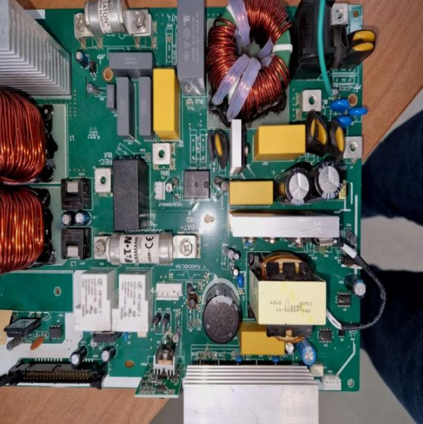
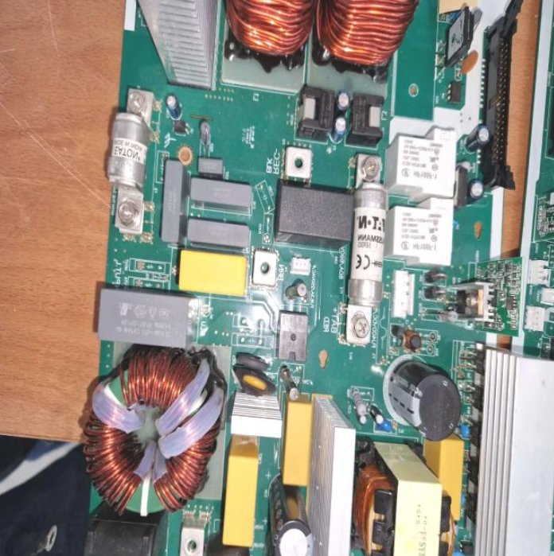
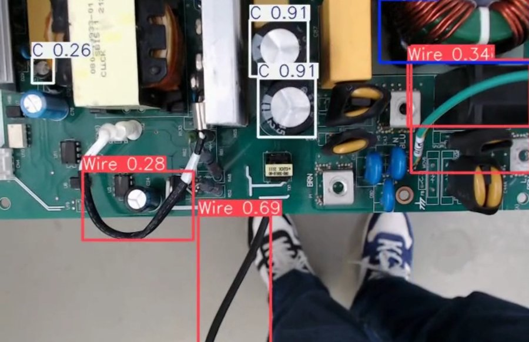
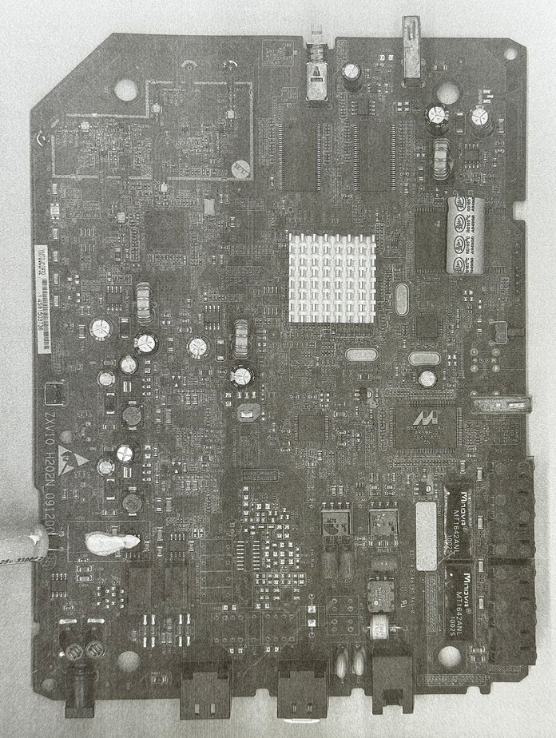
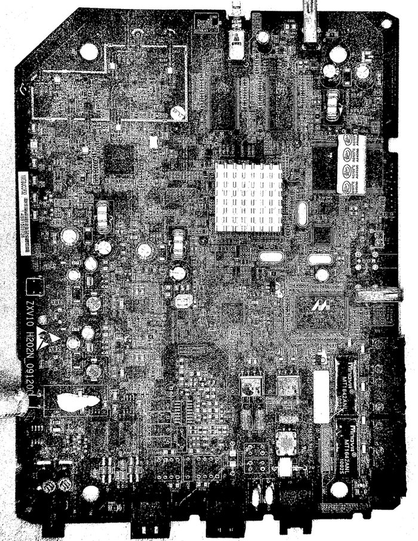
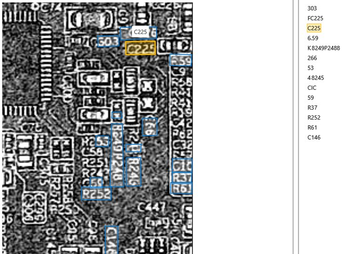
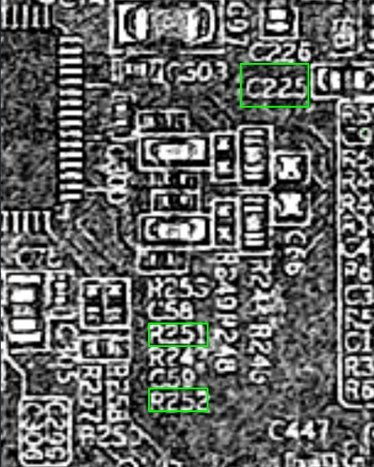
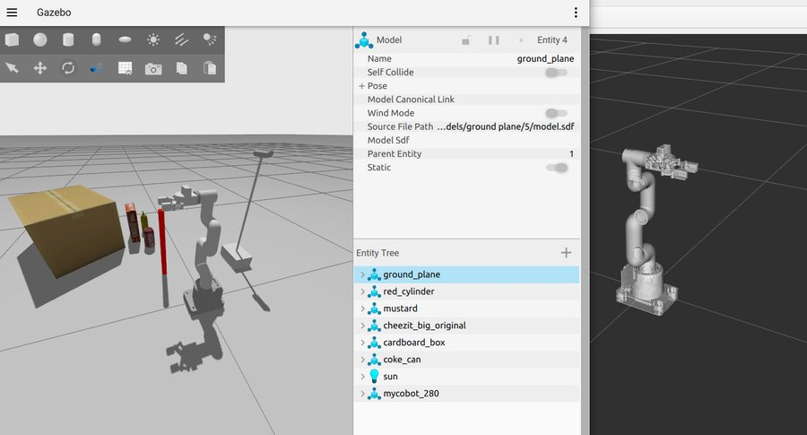
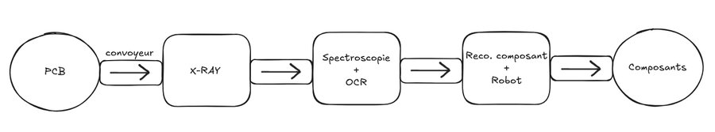

Between April and September 2025 I did my Master's R&D internship at I2M, a joint research lab of the CNRS, the University of Bordeaux and Arts et Métiers, on the Talence campus near Bordeaux. The internship was part of SDC2 (Smart Disassembly Cell for Circularity of WEEE, e-Motors and Power Converters), a project studying how Industry 4.0 technology can make electronics recycling less wasteful.
Most recycling today still works by shredding devices in bulk, which recovers very little of the valuable material inside and destroys any information about what a device actually contained. In France, only 40% of broken electrical and electronic devices ever get repaired instead of thrown away. My part of the project covered two of SDC2's building blocks, recognizing the components on a printed circuit board and feeding that information into a robotic arm that can eventually extract them.
THE FULL INTERNSHIP REPORT IS AVAILABLE HERE
To recognize components on a PCB I compared YOLO versions from v1 through v11 along with Faster R-CNN, and settled on YOLOv8s for being light enough to run on a robot's onboard camera while still accurate enough to fine-tune for specific components. No usable public PCB dataset existed for this, the ones I found were either too low resolution or built for surface quality inspection rather than component identification, so I built my own, photographing PCBs in the workshop with a Galaxy S22 and expanding around 30 raw photos to 102 through flipping, rotation, cropping and brightness changes. I used a few-shot approach since the real goal was a model that generalizes to components it has never seen, not one that memorizes a big dataset.

PCB photographed for the training dataset

Another PCB from the same shoot
Training was done locally on an RTX 3080, and tuning layer freezing and the learning rate took the model from about 50% accuracy to a final mAP0.5 of 91% and mAP0.5-0.95 of 78%, across 8 component classes including wires and capacitors. Live testing was done with a Logitech StreamCam.

Live detection running on a PCB at the workshop
Knowing a box is "a capacitor" isn't quite enough, so the second track was reading each component's printed reference code, things like C225 or R37, to look up its exact composition. I compared two local OCR models, EasyOCR and Tesseract, against two cloud models, Azure and Gemini. Most of the actual work turned out to be image preprocessing rather than model tuning, the raw photos were too dark and low contrast for any of the models to read reliably.

PCB scan before processing

The same scan after contrast and exposure work
Even after preprocessing, results were modest. Local models read about 3 to 4 references per image and the cloud models 7 to 10. Tracing the problem showed it wasn't really about the OCR models, it came from the scanner used to capture the boards, a low-resolution laser scanner that couldn't be zoomed in on cleanly. A better camera or scanner is the clear next step here.

Reference reading with Azure

Reference reading with EasyOCR
The last piece is putting this to use physically, extracting the recognized components from the board. I started implementing this on a Doosan M1013 arm with a SensoPart RoboticsR3 camera (Doosan's own tooling turned out to be limiting enough that switching to a Universal Robots arm is being considered). The planned pipeline is straightforward, the camera captures the board, recognition runs on a computer and sends back the coordinates of the components found, and the arm computes and executes the joint movements to reach them.
Before touching the real arm, I built a working ROS2 and Gazebo simulation with the correct robot model and joints in place. Linking that simulation to the recognition output, and then to the physical arm, is the next step. At this stage the arm can be positioned over a recognized component, but not yet used to extract it.

The robotic arm loaded in the ROS2/Gazebo simulation
Camera-based recognition alone can't see everything a PCB needs to reveal, so part of the internship went into researching two extra sensing technologies, without committing to either yet. Spectroscopy could sharpen faded or dirty reference text and give a quick surface-material read, but needs a tightly controlled lighting setup to be reliable. X-ray would reveal a board's internal structure, including components hidden underneath others or soldered on the far side, but the hardware is expensive and comes with its own safety and data-processing complications. LiDAR, ultrasound and thermal imaging were also looked at more briefly.

An early sketch of a possible disassembly cell, from PCB in to recovered components out
This is explicitly a first pass at the architecture, not a final design. The actual layout will depend on which of these sensing technologies end up making the cut.
By the end of the internship the component recognition model was solid and working reliably, the reference reading pipeline could read real references but was limited by the imaging hardware rather than the models themselves, and the robotic side had a working simulation with the physical implementation still ahead. Planned next steps include experimenting with additional YOLO modules (ACMix, E-LAN, ResNet, DyHead), building a proper database linking recognized components to their reference and composition, sourcing a better imaging sensor for the OCR pipeline, and finishing the link between the Gazebo simulation and the real Doosan arm.